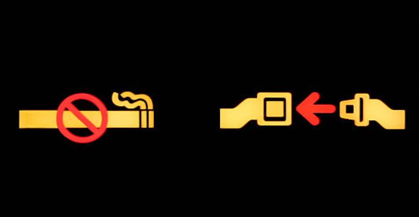

Learn travel safety tips from the experts
Rob Mark is a seasoned commercial pilot, podcaster and journalist with the original aviation blog Jetwhine, who has dedicated his life to the aviation industry. Mark’s journey in aviation has been marked by diverse experiences, including a stint as an air traffic controller for the FAA.
Benét Wilson is a self-proclaimed “Aviation Queen” (also the name of the media organization she founded for aviation journalism) who specializes in travel safety tips, especially for minority communities. She’s traveled across the world and back and worked as a supervisor and reporter for The Points Guy, LendingTree and more. NPR, Adweek and other major media outlets have interviewed Wilson as a travel expert.
Read on for Mark’s and Wilson’s best travel safety tips!- Buckle Up Always: Turbulence can occur unexpectedly, causing injuries to passengers who are not securely seated. Even after the seatbelt sign is turned off, it's crucial to keep that seatbelt fastened.
- Know Your Route: Before arriving at a new destination, especially if it's after dark, plan your route and ensure someone trustworthy is picking you up. Avoid hailing random cabs or rides, especially in unfamiliar territories.
- Stay Aware of Surroundings: Given the prevalence of technology use, it's essential to balance the convenience of navigation apps with staying aware of surroundings. Walking around with a phone constantly in hand and your eyes down can make you a target for theft. Keep one headphone in your ear to hear directions, and keep your eyes on the road.
- Guard Your Belongings: Try to avoid looking lost/vulnerable especially in busy places like airports, where pickpockets may be on the lookout for distracted travelers.
- Break Language Barriers: When faced with language barriers, seek assistance from authority figures like police officers. Most police officers have some proficiency in English, and if communication is challenging, gestures and pointing can help bridge the gap.
- Get Savvy: For unmarried women traveling solo, wear a fake wedding band on your ring finger. This makes you less vulnerable to attackers because you don’t appear “alone.”
- Lock it Up: Bring a lock and key (available on Amazon for $9) so that no one can steal your belongings from the hostel locker. If you’re staying in a private hostel room, bring a portable door lock (available on Amazon for $8) so that no one can unlock your door from the outside.
- Don’t Leave Without ‘Em: Make sure to pack identification (passport, driver’s license and phone with screenshot of boarding pass), hygiene products, snacks, a collapsible water bottle, a plastic bag for trash or dirty clothes, headphones, chargers, adapters and a plug outlet with plugs, USB and USBC ports. Keep it all in a backpack that will fit under the seat in front of you.